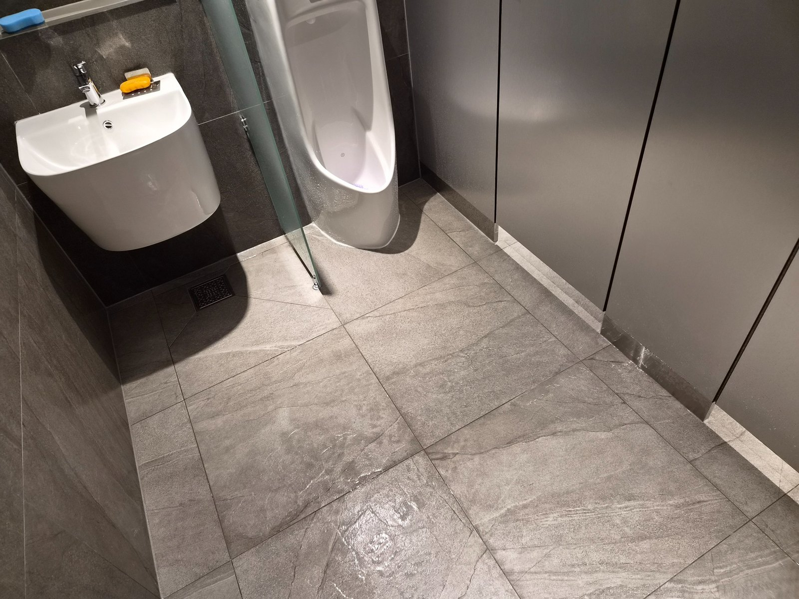
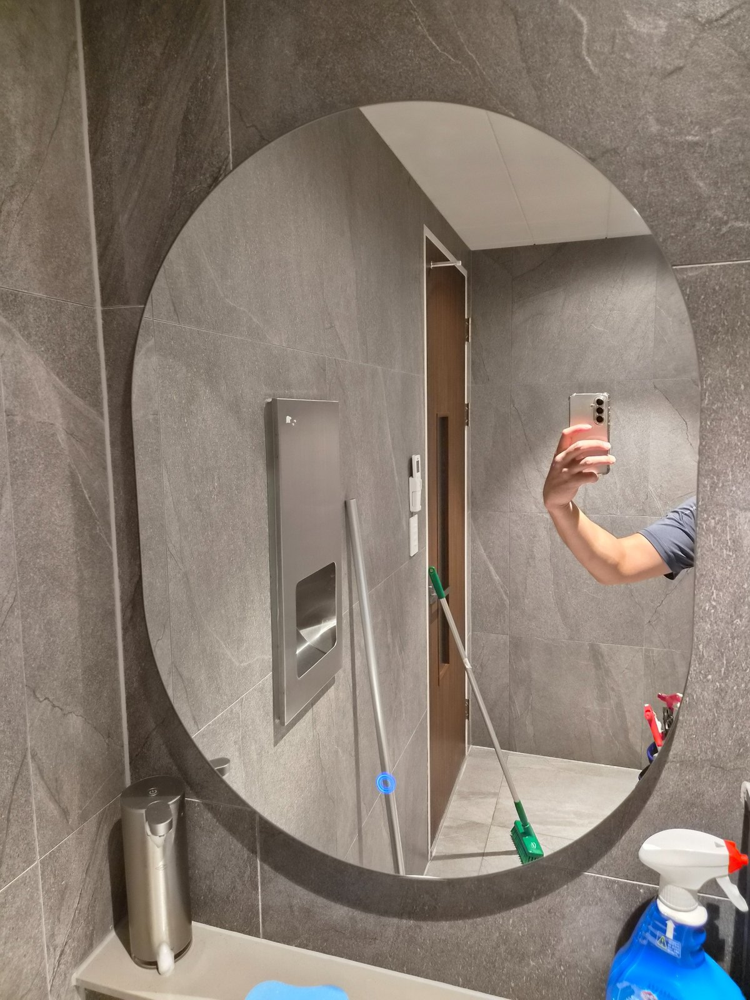
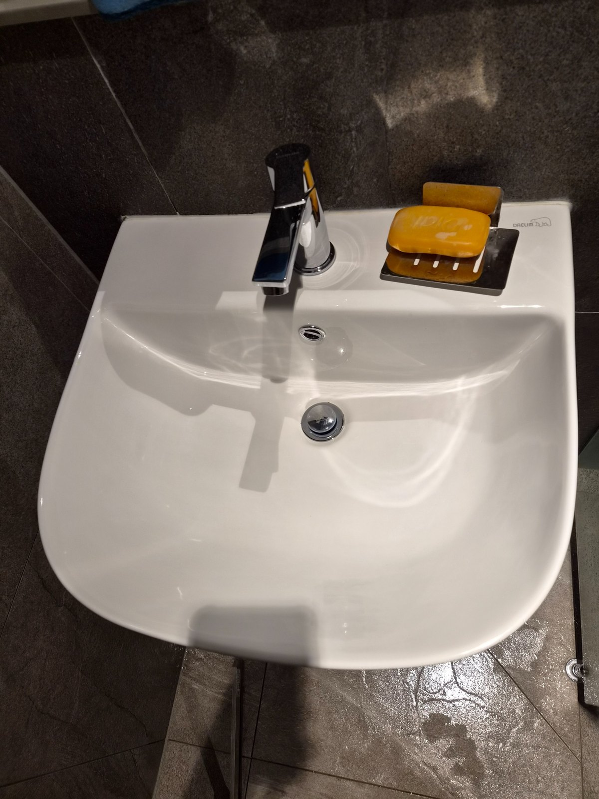
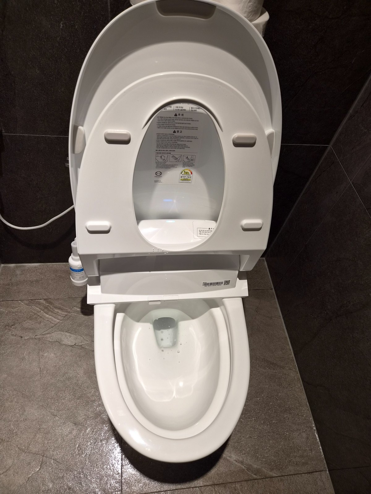

최근 공장과 사무동 화장실은 큰 타일, 벽걸이 세면대, 비데 변기처럼 관리 포인트가 다양합니다. 깔끔해 보이는 공간도 물기와 손자국, 미세한 오염이 반복적으로 쌓이기 때문에 정기청소로 상태를 유지하는 것이 효율적입니다.

깔끔한 화장실도 정기적인 관리가 필요합니다
새로 정비된 공간이나 비교적 깨끗한 화장실은 심한 오염이 생긴 뒤 대청소를 하는 것보다 현재 상태를 유지하는 정기관리가 유리합니다. 세면대와 수전, 거울, 소변기, 변기, 칸막이 주변과 바닥을 순서대로 확인합니다.


타일 바닥은 물기와 발자국이 바로 보입니다
큰 규격의 타일은 넓고 깔끔해 보이지만 조명에 따라 물자국과 보행 흔적이 쉽게 보입니다. 바닥 재질과 오염 상태에 맞는 세제를 사용하고 물기 정리까지 진행해 미끄럼과 얼룩을 줄이는 방향으로 관리합니다.

김해 산업단지 사업장 정기관리
퍼펙트케어는 김해 공단과 산업단지의 사무실, 공장, 화장실 정기청소를 함께 상담합니다. 관리 횟수는 주 1회부터 주 6회까지 가능하며 교육받은 직원이 현장 조건에 맞춰 투입됩니다. 대량건도 문제없습니다.
김해 공단·산업단지 사업장 청소 상담
김해 주촌·진례·한림·대동 등 공장과 사무실이 밀집한 지역을 포함해 화장실 정기청소 상담이 가능합니다. 현장 규모, 직원 수, 방문객 수, 화장실 이용량, 운영시간, 바닥 오염 정도와 관리 범위를 확인한 뒤 무료 방문견적으로 안내합니다.